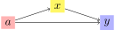
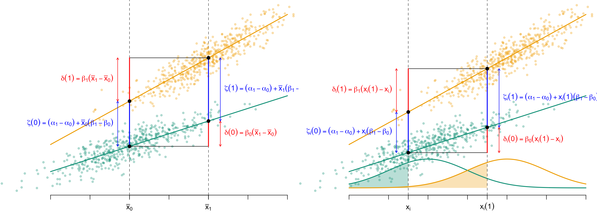

library(tidyverse)
library(mnormt)2 Reminders and Definitions
Objectives
In this page, we recall some notations and key concepts about causal effects.
\[ \definecolor{wongBlack}{RGB}{0,0,0} \definecolor{wongGold}{RGB}{230, 159, 0} \definecolor{wongLightBlue}{RGB}{86, 180, 233} \definecolor{wongGreen}{RGB}{0, 158, 115} \definecolor{wongYellow}{RGB}{240, 228, 66} \definecolor{wongBlue}{RGB}{0, 114, 178} \definecolor{wongOrange}{RGB}{213, 94, 0} \definecolor{wongPurple}{RGB}{204, 121, 167} \definecolor{colA}{RGB}{255, 221, 85} \definecolor{colB}{RGB}{148, 78, 223} \definecolor{colC}{RGB}{63, 179, 178} \definecolor{colGpe1}{RGB}{127, 23, 14} \definecolor{colGpe0}{RGB}{27, 149, 224} \]
We load some useful functions to export graphs (see Chatper 3).
source("../scripts/utils.R")2.1 Causal Effects
Let \(a\in\{0,1\}\) be a binary treatment, and \(y\in\mathcal{Y}\) be an outcome of interest. Assume that the treatment influences the outcome both directly and through an indirect effect, via a set of mediators \(\boldsymbol{x}\in\mathcal{X}\).
Let \(y(a)\) denote the potential outcome under treatment \(a\) and, following Imai, Keele, and Yamamoto (2010), let \(\boldsymbol{x}(a)\) be the potential values for the mediator under treatment \(a\).
Assume that no variable influences the treatment, making it the root node in the causal structure, as shown in the DAG in Figure 2.1.

These counterfactual mediator values allow for the definition of natural direct and indirect effects.
Natural Indirect Effect (Pearl (2001))
The causal mediation effect for the \(i\)th individual writes:
\[ \delta(a):=\widehat{\mu}_a(\boldsymbol{x}(1))-\widehat{\mu}_a(\boldsymbol{x}(0)) \] where \(\widehat{\mu}_a(\boldsymbol{x})\) denote the predicted outcome under treatment \(a\) and mediator value \(\boldsymbol{x}\).
Imai, Keele, and Yamamoto (2010) refers to \(\delta_i{(a)}\) as the causal mediation effect.
As noted by Imai, Keele, and Yamamoto (2010), under treatment status \(a\), we only observe \(\boldsymbol{x}{(a)}\) and we never observe \(\boldsymbol{x}{(1-a)}\). Using optimal transport, we will build the unobserved value, the counterfactual.
Average Natural Indirect Effect
The average causal mediation effects writes:
\[ \begin{align*} \bar{\delta}{(a)} & \equiv \mathbb{E}\bigl[\delta_i{(a)}\bigr] \end{align*} \tag{2.1}\]
The natural direct effect writes: \[ \zeta(a):=\widehat{\mu}_1(\boldsymbol{x}(a))-\widehat{\mu}_0(\boldsymbol{x}(a))\\ \tag{2.2}\]
Hence, it represents the direct effect of the treatment for a given level of the mediator.
Total Causal Effect (Imai, Keele, and Yamamoto (2010))
The total causal effect is given by \[ \tau:=\delta(a)+\zeta(1-a). \tag{2.3}\]
As explained in Robins and Greenland (1992) and further formalized in Pearl (2001), in a randomized experiment where mediators are measured after treatment assignment, the total, direct, and indirect effects are identifiable. More specifically, under well-defined counterfactuals, the unit-level total effect \(\tau\) can be additively decomposed, as illustrated in Figure 2.2, into: \[ \begin{cases} \delta(a):=\widehat{\mu}_a(\boldsymbol{x}(1))-\widehat{\mu}_a(\boldsymbol{x}(0))\\ \zeta(a):=\widehat{\mu}_1(\boldsymbol{x}(a))-\widehat{\mu}_0(\boldsymbol{x}(a))\\ \tau:=\delta(a)+\zeta(1-a). \end{cases} \]
Codes to create the Figure.
library(tikzDevice)
COLRJ <- c("#00A08A","#F2AD00")
colrj <- scales::alpha(COLRJ,.3)
colrs <- c("red","blue")
colrm <- "#9986A5"
export_tikz <- FALSE
# Generate data
n <- 500
mx0 <- -1
mx1 <- +1
s <- 1
x <- seq(-3, 3, length = 601)
dx0 <- dnorm(x, mx0, s)
dx1 <- dnorm(x, mx1, s)
set.seed(1234)
x0 <- rnorm(n, mx0, s)
x1 <- rnorm(n, mx1, s)
fm0 <- function(x) 3 + x * .7
fm1 <- function(x) 6 + x * 1.2
y0 <- fm0(x0) + rnorm(n) / 2
y1 <- fm1(x1) + rnorm(n) / 2
# First plot----
cex_pts <- .4
height_fig_tkz <- width_fig_tkz <- 2.67
if (export_tikz == TRUE) {
par(mar = c(2.1, 0, 0, 0))
tikz('figs/gaussian-1-mean.tex', width = width_fig_tkz, height = height_fig_tkz)
} else {
par(mar = c(2.1, 0, 0, 0), mfrow = c(1, 2))
}
# Empty plot
plot(
NA, NA, ylim = c(0, 10),
xlab = "", ylab = "",
axes = FALSE, xlim = c(-4, 3)
)
axis(1, at = -3:3, labels = FALSE)
if (export_tikz == TRUE) {
lab_x = c(
"$\\bar{x}_0$",
"$\\bar{x}_1$"
)
lab_line_0 <- "$y = \\alpha_0 + \\beta_0 x$"
lab_line_1 <- "$y = \\alpha_1 + \\beta_1 x$"
} else {
lab_x <- expression(
bar(x)[0], # \bar{x}_0
bar(x)[1] # \bar{x}_1
)
lab_line_0 <- expression(y == alpha[0] + beta[0] * x)
lab_line_1 <- expression(y == alpha[1] + beta[1] * x)
}
axis(
1,
at = c(-1, 1),
labels = lab_x,
tick = TRUE, # still draw the little tick marks
line = 0 # on the axis line
)
if (1 == 0) {
# Outcome group 0
text(
x = 3, y = 4.15,
labels = lab_line_0,
pos = 2,
cex = 1,
col = COLRJ[1]
)
# Outcome group 1
text(
x = -3, y = 4.15,
labels = lab_line_1,
pos = 4,
cex = 1,
col = COLRJ[2]
)
}
# True mean in each group
abline(v = c(mx0, mx1), lty = 2, lwd = .7)
# Observed points in group 0
points(x0, y0, pch = 19, cex = cex_pts, col = colrj[1])
# True conditional mean in grouo 0
segments(-3, fm0(-3), 3, fm0(3), col = COLRJ[1], lwd = 2)
# Observed points in group 1
points(x1, y1, pch = 19, cex = cex_pts, col = colrj[2])
# True conditional mean in grouo 0
segments(-3, fm1(-3), 3, fm1(3), col = COLRJ[2], lwd = 2)
segments(mx0, fm0(mx0), mx1, fm0(mx0))
segments(mx0, fm1(mx1), mx1, fm1(mx1))
# delta(0)
segments(mx1, fm0(mx1), mx1, fm0(mx0), col = "red", lwd = 2)
# zeta(1)
segments(mx1, fm1(mx1), mx1, fm0(mx1), col = "blue", lwd = 2)
# delta(1)
segments(mx0, fm0(mx0), mx0, fm1(mx0), col = "blue", lwd = 2)
# zeta(0)
segments(mx0, fm1(mx0), mx0, fm1(mx1), col = "red", lwd = 2)
points(mx0, fm0(mx0), pch = 19) # \hat{\mu}_0(\bar{x}_0)
points(mx1, fm1(mx1), pch = 19) # \hat{\mu}_1(\bar{x}_1)
points(mx1, fm0(mx1), pch = 19) # \hat{\mu}_0(\bar{x}_1)
points(mx0, fm1(mx0), pch = 19) # \hat{\mu}_1(\bar{x}_0)
# ---
# Texts for direct/indirect effects
# ---
h <- .3
arrow_length <- .05
if (export_tikz == TRUE) {
# lab_delta_0 <- "$\\delta(0) = \\beta_0(\\bar{x}_1-\\bar{x}_0)$"
# lab_delta_0 <- "$\\delta(1) = \\beta_1 (\\bar{x}_1 - \\bar{x}_0)$"
# lab_zeta_0 <- "$\\zeta(0) = (\\alpha_1 - \\alpha_0) + \\bar{x}_0(\\beta_1-\\beta_0)$"
# lab_zeta_1 <- "$\\zeta(1) = (\\alpha_1 - \\alpha_0) + \\bar{x}_1(\\beta_1-\\beta_0)$"
lab_delta_0 <- "$\\delta(0)$"
lab_delta_1 <- "$\\delta(1)$"
lab_zeta_0 <- "$\\zeta(0)$"
lab_zeta_1 <- "$\\zeta(1)$"
} else {
lab_delta_0 <- expression(delta(0) == beta[0] * (bar(x)[1] - bar(x)[0]))
lab_delta_1 <- expression(delta(1) == beta[1] * (bar(x)[1] - bar(x)[0]))
lab_zeta_0 <- expression(
zeta(0) == (alpha[1] - alpha[0]) + bar(x)[0] * (beta[1] - beta[0])
)
lab_zeta_1 <- expression(
zeta(1) == (alpha[1] - alpha[0]) + bar(x)[1] * (beta[1] - beta[0])
)
}
# delta(0)
arrows(mx1 + h, fm0(mx1), mx1 + h, fm0(mx0), code = 3, length = arrow_length, col = "red")
text(
x = mx1 + h, y = (fm0(mx0) + fm0(mx1)) / 2,
labels = lab_delta_0,
pos = 4,
cex = 1, col = "red"
)
# zeta(0)
arrows(mx0 - h, fm0(mx0), mx0 - h, fm1(mx0), code = 3, length = arrow_length, col = "blue")
text(
x = mx0 - h, y = (fm0(mx0) + fm1(mx0)) / 2,
labels = lab_zeta_0,
pos = 2,
cex = 1, col = "blue"
)
# delta(1)
arrows(mx0 - h, fm1(mx0), mx0 - h, fm1(mx1), code = 3, length = arrow_length, col = "red")
text(
x = mx0 - h, y = (fm1(mx0) + fm1(mx1)) / 2,
labels = lab_delta_1,
pos = 2,
cex = 1, col = "red"
)
# zeta(1)
arrows(mx1 + h, fm0(mx1), mx1 + h, fm1(mx1), code = 3, length = arrow_length, col = "blue")
text(
x = mx1+h, y = (fm0(mx1) + fm1(mx1)) / 2,
labels = lab_zeta_1,
pos = 4,
cex = 1, col = "blue"
)
if (export_tikz == TRUE) dev.off()
# Second plot----
if (export_tikz == TRUE) {
tikz('figs/gaussian-1-transp.tex', width = width_fig_tkz, height = height_fig_tkz)
}
# With the counterfactual
t0 <- -1.5
t1 <- .5
plot(
NA, NA, ylim = c(0, 10),
xlab = "", ylab = "",
axes = FALSE, xlim = c(-4, 3)
)
# P(X <= t0 | A = 0)
polygon(
c(-3, x[x <= t0], t0), c(0, dx0[x <= t0], 0) * 4,
col = colrj[1], border = NA
)
# P(X <= t0 | A = 1)
polygon(
c(-3, x[x <= t1], t1), c(0, dx1[x <= t1], 0) * 4,
col = colrj[2], border = NA
)
# densities in both groups
lines(x, dx0 * 4, col = COLRJ[1], lwd = 2)
lines(x, dx1 * 4, col = COLRJ[2], lwd = 2)
axis(1, at = -3:3, labels = FALSE)
if (export_tikz == FALSE) {
lab_x <- expression(
x[i], # \bar{x}_0
x[i](1) # \bar{x}_1
)
lab_line_0 <- expression(y == alpha[0] + beta[0] * x)
lab_line_1 <- expression(y == alpha[1] + beta[1] * x)
} else {
lab_x = c(
"$x_i$",
"$x_i(1)$"
)
lab_line_0 <- "$y = \\alpha_0 + \\beta_0 x$"
lab_line_1 <- "$y = \\alpha_1 + \\beta_1 x$"
}
axis(
1,
at = c(t0, t1),
labels = lab_x,
tick = TRUE, # still draw the little tick marks
line = 0 # on the axis line
)
if (1== 0) {
# Outcome in group 0
text(
x = 3, y = 4.15,
labels = lab_line_0,
pos = 2,
cex = 1,
col = COLRJ[1]
)
# Outcome in group 1
text(
x = -3, y = 4.15,
labels = lab_line_1,
pos = 4,
cex = 1,
col = COLRJ[2]
)
}
# True mean in each groups
abline(v = c(t0, t1), lty = 2, lwd = .7)
# Observed points in group 0
points(x0, y0, pch = 19, cex = cex_pts, col = colrj[1])
# True conditional mean in grouo 0
segments(-3, fm0(-3), 3, fm0(3), col = COLRJ[1], lwd = 2)
# Observed points in group 1
points(x1, y1, pch = 19, cex = cex_pts, col = colrj[2])
# True conditional mean in grouo 0
segments(-3, fm1(-3), 3, fm1(3), col = COLRJ[2], lwd = 2)
# This time, instead of means: transported values
segments(t0, fm0(t0), t1, fm0(t0))
segments(t0, fm1(t1), t1, fm1(t1))
segments(t1, fm0(t1), t1, fm0(t0), col = "red", lwd = 2)
segments(t1, fm1(t1), t1, fm0(t1), col = "blue", lwd = 2)
segments(t0, fm0(t0), t0, fm1(t0), col = "blue", lwd = 2)
segments(t0, fm1(t0), t0, fm1(t1), col = "red", lwd = 2)
points(t0, fm0(t0), pch = 19) # \hat{\mu}_0(x_0)
points(t1, fm1(t1), pch = 19) # \hat{\mu}_1(T(x_0)
points(t1, fm0(t1), pch = 19) # \hat{\mu}_0(T(x_0))
points(t0, fm1(t0), pch = 19) # \hat{\mu}_1(x_0)
# ---
# Texts for direct/indirect effects
# ---
h <- .3
arrow_length <- .05
if (export_tikz == TRUE) {
# lab_delta_0 <- "$\\delta_i(0) = \\beta_0 (x_i(1) - x_i)$"
# lab_delta_1 <- "$\\delta_i(1) = \\beta_1(x_i(1) - x_i)$"
# lab_zeta_0 <- "$\\zeta_i(0) = (\\alpha_1 - \\alpha_0) + x_i(\\beta_1 - \\beta_0)$"
# lab_zeta_1 <- "$\\zeta_i(1) = (\\alpha_1 - \\alpha_0) + x_i(1)(\\beta_1-\\beta_0)$"
lab_delta_0 <- "$\\delta_i(0)$"
lab_delta_1 <- "$\\delta_i(1)$"
lab_zeta_0 <- "$\\zeta_i(0)$"
lab_zeta_1 <- "$\\zeta_i(1)$"
} else {
lab_delta_0 <- expression(delta[i](0) == beta[0] * (x[i](1) - x[i]))
lab_delta_1 <- expression(delta[i](1) == beta[1] * (x[i](1) - x[i]))
lab_zeta_0 <- expression(
zeta[i](0) == (alpha[1] - alpha[0]) + x[i] * (beta[1] - beta[0])
)
lab_zeta_1 <- expression(
zeta[i](1) == (alpha[1] - alpha[0]) + x[i](1) * (beta[1] - beta[0])
)
}
# delta(0)
arrows(t1 + h, fm0(t1), t1 + h, fm0(t0), code = 3, length = arrow_length, col = "red")
text(
x = t1 + h, y = (fm0(t0) + fm0(t1)) / 2,
labels = lab_delta_0,
pos = 4,
cex = 1, col = "red"
)
# zeta(0)
arrows(t0 - h, fm0(t0), t0 - h, fm1(t0), code = 3, length = arrow_length, col = "blue")
text(
x = t0-h, y = (fm0(t0) + fm1(t0)) / 2,
labels = lab_zeta_0,
pos = 2,
cex = 1, col = "blue"
)
# delta(1)
arrows(t0 - h, fm1(t0), t0 - h, fm1(t1), code = 3, length = arrow_length, col = "red")
text(
x = t0 - h, y = (fm1(t0) + fm1(t1)) / 2,
labels = lab_delta_1,
pos = 2,
cex = 1, col = "red"
)
# zeta(1)
arrows(t1 + h, fm0(t1), t1 + h, fm1(t1), code = 3,length = arrow_length, col = "blue")
text(
x = t1 + h, y = (fm0(t1) + fm1(t1)) / 2,
labels = lab_zeta_1,
pos = 4,
cex = 1, col = "blue"
)
if (export_tikz == TRUE) {
dev.off()
plot_to_pdf(filename = "gaussian-1-mean", path = "./figs/", keep_tex = FALSE, crop = TRUE)
plot_to_pdf(filename = "gaussian-1-transp", path = "./figs/", keep_tex = FALSE, crop = TRUE)
}
